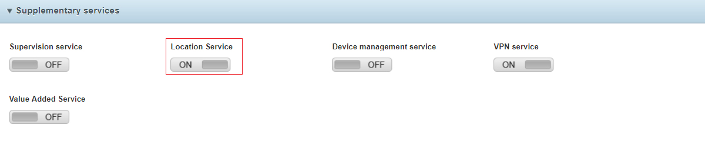

Table of Contents
What is Asset Tracking?
Today, geo-location of devices is one of the most demanded skills in the IoT world. This growing demand arises from the need to be able to locate our devices at any moment.
Utilities like locating our car in the parking lot of a shopping center, or simply finding our keys in the lounge of our house.7 Tells us that these new utilities will be even more demanded by consumers in the coming years.
Now let’s be honest, not only do customers benefit from these new technologies, more and more companies are investing money and effort in being able to locate the location of their assets. It is not only necessary to know the state of our devices, also to be able to locate them quickly.
Why do we need Asset Tracking?
The technology has greatly facilitated us to have GPS modules easy to install in any device, but for small devices of low consumption, not only cause us an increase in the final price of the device but also an increase in the size that has cost so much to reduce, including the payment of a higher battery consumption.
What is Telefónica’s solution?
The solution is the Kite Platform
Through the managed connection, you can access the location of the SIM using the Telefónica network coverage.
It’s easy, you just have to activate the Location Service of your SIM in Kite

What will you need?
Soon ..

What it does?
Soon ..

How to get started
How Activate Location Service
First Go to SIM Inventory / Select your SIM / and Press Activate on the bottom-menu

find the opction Activate Location and click it.

A new window is open! Click in Activation

Now the service is activate click on Finish


How to run it
Soon …